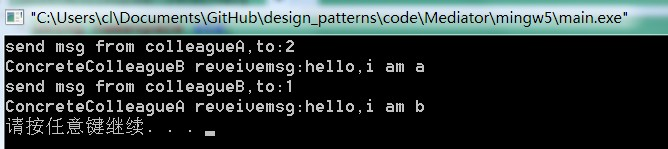

2. 中介者模式¶
2.1. 模式动机¶
在用户与用户直接聊天的设计方案中，用户对象之间存在很强的关联性，将导致系统出现如下问题：
系统结构复杂：对象之间存在大量的相互关联和调用，若有一个对象发生变化，则需要跟踪和该对象关联的其他所有对象，并进行适当处理。
对象可重用性差：由于一个对象和其他对象具有很强的关联，若没有其他对象的支持，一个对象很难被另一个系统或模块重用，这些对象表现出来更像一个不可分割的整体，职责较为混乱。
系统扩展性低：增加一个新的对象需要在原有相关对象上增加引用，增加新的引用关系也需要调整原有对象，系统耦合度很高，对象操作很不灵活，扩展性差。
在面向对象的软件设计与开发过程中，根据“单一职责原则”，我们应该尽量将对象细化，使其只负责或呈现单一的职责。
对于一个模块，可能由很多对象构成，而且这些对象之间可能存在相互的引用，为了减少对象两两之间复杂的引用关系，使之成为一个松耦合的系统，我们需要使用中介者模式，这就是中介者模式的模式动机。
2.2. 模式定义¶
中介者模式(Mediator Pattern)定义：用一个中介对象来封装一系列的对象交互，中介者使各对象不需要显式地相互引用，从而使其耦合松散，而且可以独立地改变它们之间的交互。中介者模式又称为调停者模式，它是一种对象行为型模式。
2.3. 模式结构¶
中介者模式包含如下角色：
Mediator: 抽象中介者
ConcreteMediator: 具体中介者
Colleague: 抽象同事类
ConcreteColleague: 具体同事类
2.4. 时序图¶

2.5. 代码分析¶
1#include <iostream>
2#include "ConcreteColleagueA.h"
3#include "ConcreteMediator.h"
4#include "ConcreteColleagueB.h"
5
6using namespace std;
7
8int main(int argc, char *argv[])
9{
10 ConcreteColleagueA * pa = new ConcreteColleagueA();
11 ConcreteColleagueB * pb = new ConcreteColleagueB();
12 ConcreteMediator * pm = new ConcreteMediator();
13 pm->registered(1,pa);
14 pm->registered(2,pb);
15
16 // sendmsg from a to b
17 pa->sendmsg(2,"hello,i am a");
18 // sendmsg from b to a
19 pb->sendmsg(1,"hello,i am b");
20
21 delete pa,pb,pm;
22 return 0;
23}
1///////////////////////////////////////////////////////////
2// ConcreteMediator.h
3// Implementation of the Class ConcreteMediator
4// Created on: 07-十月-2014 21:30:47
5// Original author: colin
6///////////////////////////////////////////////////////////
7
8#if !defined(EA_8CECE546_61DD_456f_A3E7_D98BC078D8E8__INCLUDED_)
9#define EA_8CECE546_61DD_456f_A3E7_D98BC078D8E8__INCLUDED_
10
11#include "ConcreteColleagueB.h"
12#include "Mediator.h"
13#include "ConcreteColleagueA.h"
14#include <map>
15using namespace std;
16class ConcreteMediator : public Mediator
17{
18
19public:
20 ConcreteMediator();
21 virtual ~ConcreteMediator();
22
23 virtual void operation(int nWho,string str);
24 virtual void registered(int nWho, Colleague * aColleague);
25private:
26 map<int,Colleague*> m_mpColleague;
27};
28#endif // !defined(EA_8CECE546_61DD_456f_A3E7_D98BC078D8E8__INCLUDED_)
1///////////////////////////////////////////////////////////
2// ConcreteMediator.cpp
3// Implementation of the Class ConcreteMediator
4// Created on: 07-十月-2014 21:30:48
5// Original author: colin
6///////////////////////////////////////////////////////////
7
8#include "ConcreteMediator.h"
9#include <map>
10#include <iostream>
11using namespace std;
12
13ConcreteMediator::ConcreteMediator(){
14
15}
16
17ConcreteMediator::~ConcreteMediator(){
18
19}
20
21void ConcreteMediator::operation(int nWho,string str){
22 map<int,Colleague*>::const_iterator itr = m_mpColleague.find(nWho);
23 if(itr == m_mpColleague.end())
24 {
25 cout << "not found this colleague!" << endl;
26 return;
27 }
28
29 Colleague* pc = itr->second;
30 pc->receivemsg(str);
31}
32
33
34void ConcreteMediator::registered(int nWho,Colleague * aColleague){
35 map<int,Colleague*>::const_iterator itr = m_mpColleague.find(nWho);
36 if(itr == m_mpColleague.end())
37 {
38 m_mpColleague.insert(make_pair(nWho,aColleague));
39 //同时将中介类暴露给colleague
40 aColleague->setMediator(this);
41 }
42}
1///////////////////////////////////////////////////////////
2// ConcreteColleagueA.h
3// Implementation of the Class ConcreteColleagueA
4// Created on: 07-十月-2014 21:30:47
5// Original author: colin
6///////////////////////////////////////////////////////////
7
8#if !defined(EA_79979DD4_1E73_46db_A635_E3F516ACCE0A__INCLUDED_)
9#define EA_79979DD4_1E73_46db_A635_E3F516ACCE0A__INCLUDED_
10
11#include "Colleague.h"
12
13class ConcreteColleagueA : public Colleague
14{
15
16public:
17 ConcreteColleagueA();
18 virtual ~ConcreteColleagueA();
19
20 virtual void sendmsg(int toWho,string str);
21 virtual void receivemsg(string str);
22
23};
24#endif // !defined(EA_79979DD4_1E73_46db_A635_E3F516ACCE0A__INCLUDED_)
1///////////////////////////////////////////////////////////
2// ConcreteColleagueA.cpp
3// Implementation of the Class ConcreteColleagueA
4// Created on: 07-十月-2014 21:30:47
5// Original author: colin
6///////////////////////////////////////////////////////////
7
8#include "ConcreteColleagueA.h"
9#include <iostream>
10using namespace std;
11
12ConcreteColleagueA::ConcreteColleagueA(){
13}
14
15ConcreteColleagueA::~ConcreteColleagueA(){
16}
17
18void ConcreteColleagueA::sendmsg(int toWho,string str){
19 cout << "send msg from colleagueA,to:" << toWho << endl;
20 m_pMediator->operation(toWho,str);
21}
22
23void ConcreteColleagueA::receivemsg(string str){
24 cout << "ConcreteColleagueA reveivemsg:" << str <<endl;
25}
运行结果：
2.6. 模式分析¶
中介者模式可以使对象之间的关系数量急剧减少。
中介者承担两方面的职责：
中转作用（结构性）：通过中介者提供的中转作用，各个同事对象就不再需要显式引用其他同事，当需要和其他同事进行通信时，通过中介者即可。该中转作用属于中介者在结构上的支持。
协调作用（行为性）：中介者可以更进一步的对同事之间的关系进行封装，同事可以一致地和中介者进行交互，而不需要指明中介者需要具体怎么做，中介者根据封装在自身内部的协调逻辑，对同事的请求进行进一步处理，将同事成员之间的关系行为进行分离和封装。该协调作用属于中介者在行为上的支持。

时序图

2.7. 实例¶
实例：虚拟聊天室
某论坛系统欲增加一个虚拟聊天室，允许论坛会员通过该聊天室进行信息交流，普通会员(CommonMember)可以给其他会员发送文本信息，钻石会员(DiamondMember)既可以给其他会员发送文本信息，还可以发送图片信息。该聊天室可以对不雅字符进行过滤，如“日”等字符；还可以对发送的图片大小进行控制。用中介者模式设计该虚拟聊天室。
2.8. 优点¶
中介者模式的优点
简化了对象之间的交互。
将各同事解耦。
减少子类生成。
可以简化各同事类的设计和实现。
2.9. 缺点¶
中介者模式的缺点
在具体中介者类中包含了同事之间的交互细节，可能会导致具体中介者类非常复杂，使得系统难以维护。
2.10. 适用环境¶
在以下情况下可以使用中介者模式：
系统中对象之间存在复杂的引用关系，产生的相互依赖关系结构混乱且难以理解。
一个对象由于引用了其他很多对象并且直接和这些对象通信，导致难以复用该对象。
想通过一个中间类来封装多个类中的行为，而又不想生成太多的子类。可以通过引入中介者类来实现，在中介者中定义对象。
交互的公共行为，如果需要改变行为则可以增加新的中介者类。
2.11. 模式应用¶
MVC架构中控制器
Controller 作为一种中介者，它负责控制视图对象View和模型对象Model之间的交互。如在Struts中，Action就可以作为JSP页面与业务对象之间的中介者。
2.12. 模式扩展¶
中介者模式与迪米特法则
在中介者模式中，通过创造出一个中介者对象，将系统中有关的对象所引用的其他对象数目减少到最少，使得一个对象与其同事之间的相互作用被这个对象与中介者对象之间的相互作用所取代。因此，中介者模式就是迪米特法则的一个典型应用。
中介者模式与GUI开发
中介者模式可以方便地应用于图形界面(GUI)开发中，在比较复杂的界面中可能存在多个界面组件之间的交互关系。
对于这些复杂的交互关系，有时候我们可以引入一个中介者类，将这些交互的组件作为具体的同事类，将它们之间的引用和控制关系交由中介者负责，在一定程度上简化系统的交互，这也是中介者模式的常见应用之一。
2.13. 总结¶
中介者模式用一个中介对象来封装一系列的对象交互，中介者使各对象不需要显式地相互引用，从而使其耦合松散，而且可以独立地改变它们之间的交互。中介者模式又称为调停者模式，它是一种对象行为型模式。
中介者模式包含四个角色：抽象中介者用于定义一个接口，该接口用于与各同事对象之间的通信；具体中介者是抽象中介者的子类，通过协调各个同事对象来实现协作行为，了解并维护它的各个同事对象的引用；抽象同事类定义各同事的公有方法；具体同事类是抽象同事类的子类，每一个同事对象都引用一个中介者对象；每一个同事对象在需要和其他同事对象通信时，先与中介者通信，通过中介者来间接完成与其他同事类的通信；在具体同事类中实现了在抽象同事类中定义的方法。
通过引入中介者对象，可以将系统的网状结构变成以中介者为中心的星形结构，中介者承担了中转作用和协调作用。中介者类是中介者模式的核心，它对整个系统进行控制和协调，简化了对象之间的交互，还可以对对象间的交互进行进一步的控制。
中介者模式的主要优点在于简化了对象之间的交互，将各同事解耦，还可以减少子类生成，对于复杂的对象之间的交互，通过引入中介者，可以简化各同事类的设计和实现；中介者模式主要缺点在于具体中介者类中包含了同事之间的交互细节，可能会导致具体中介者类非常复杂，使得系统难以维护。
中介者模式适用情况包括：系统中对象之间存在复杂的引用关系，产生的相互依赖关系结构混乱且难以理解；一个对象由于引用了其他很多对象并且直接和这些对象通信，导致难以复用该对象；想通过一个中间类来封装多个类中的行为，而又不想生成太多的子类。